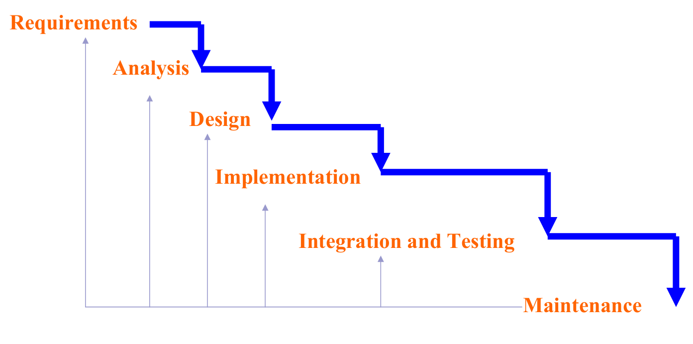
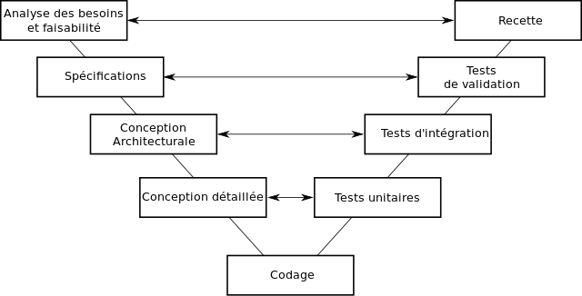
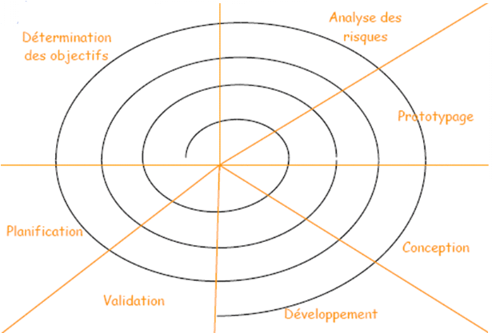
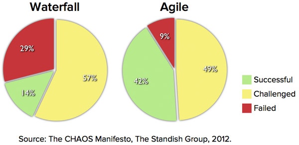
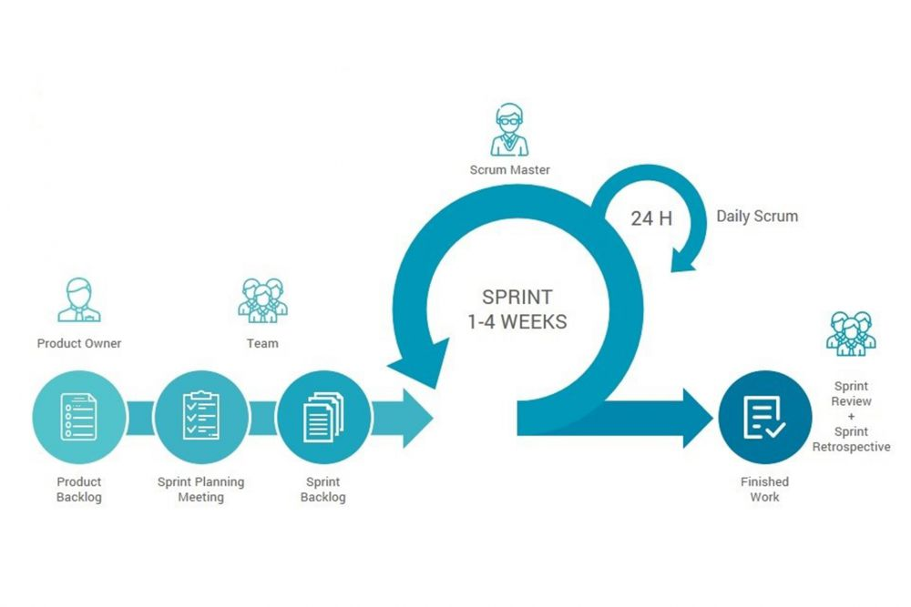

2243.2 Génie Logiciel - 2026-2027
Vue d'ensemble
3.1 Types de méthodes
3.2 Méthodes en cascade
3.3 Méthodes en V
3.4 Méthodes itératives
3.5 Exemples
3.6 Scrum
Cycle de vie d'un logiciel ou système :
Vision à long terme
Spécifications finalisées et figées en amont du développement
Plan de développement (et délivrables) figés
Vision à long terme ET vérifications court terme
Spécifications, plans et délais affinés par étapes (itératives et incrémentales)


Source : Wikimedia Commons - https://commons.wikimedia.org/wiki/File:Cycle_de_developpement_en_v.svg

Source : [Johnson02]

Livraison rapide et continue de produits utilisables
Les produits à livrer utilisables donnent la mesure des progrès réalisés
Accepter les changements, même si le projet est avancé
Cycles de livraison courts
Responsable des opérations et équipe de projet collaborent constamment
Équipes auto-organisées (habilitées)
Optimiser le recours aux conversations en personne
Favoriser un développement durable
Rapid application development (RAD, 1991)
Dynamic systems development method (DSDM, 1995)
Scrum (1996)
Extreme programming (XP, 1999)
Adaptive software development (ASD, 2000)
Développement basé sur les fonctionnalités (FDD, 2003)
Behavior-driven development (BDD, 2003)
Crystal clear (2004)

Définit les fonctionnalités du produit
Choisit la date et le contenu de la release
Responsable du retour sur investissement
Définit les priorités dans le backlog en fonction de la « valeur métier »
Ajuste les fonctionnalités et les priorités à chaque sprint si nécessaire
Accepte ou rejette les résultats
Assume la gestion du projet
Responsable de faire appliquer par l'équipe les valeurs et les pratiques de Scrum
Élimine les obstacles
S'assure que l'équipe est complètement fonctionnelle et productive
Facilite une coopération poussée entre tous les rôles et fonctions
Protège l'équipe des interférences extérieures
De 5 à 10 personnes
Regroupant tous les rôles (architecte, concepteur, développeur, spécialiste IHM, testeur, …)
A plein temps sur le projet, de préférence
L'équipe s'organise par elle-même
La composition de l'équipe ne doit pas changer pendant un Sprint